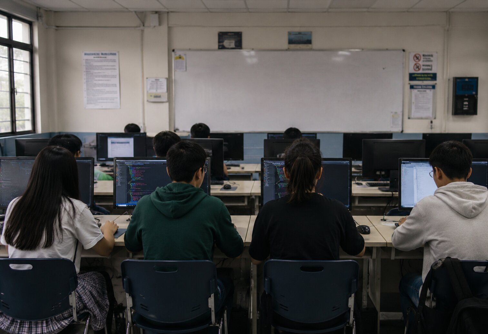

Innovation
We encourage creative thinking and embrace new ideas that solve problems and inspire positive change.
Accessible Technology, Endless Possibilities.
Discover your potential through technology, innovation, and accessibility.
At the Tech Innovators ICT Club, we believe every student has the ability to learn, create, and make a positive impact. Whether you're taking your first step into programming or expanding your technical skills, we provide a welcoming community where curiosity grows into confidence and ideas become reality.
Join us as we explore programming, web development, app development, game development, accessibility, and emerging technologies while working together to build solutions that benefit our school and community.

Welcome to the Tech Innovators ICT Club!
We are delighted to have you here. Our club is a place where students come together to learn, collaborate, and explore the exciting world of Information and Communications Technology. Whether you are a beginner eager to learn or an experienced student looking to expand your skills, you are always welcome.
We believe that learning is most rewarding when it is shared. Through teamwork, creativity, and hands-on experiences, we encourage every member to discover new ideas, build practical skills, and develop the confidence to turn those ideas into meaningful projects.
As you explore our website, you'll learn more about who we are, what we believe, and how you can become part of a community that values innovation, accessibility, and lifelong learning.
The Tech Innovators ICT Club is a student-led organization dedicated to helping students discover the exciting possibilities of technology. We provide opportunities to develop programming skills, explore emerging technologies, and work together on projects that inspire creativity, innovation, and problem-solving.
Our club believes that technology should improve lives and be accessible to everyone. By promoting inclusive design, responsible digital citizenship, and ethical use of technology, we encourage our members to create solutions that make a positive difference in both our school and the wider community.
Through workshops, collaborative activities, seminars, competitions, and real-world projects, we provide an environment where students can grow academically, personally, and professionally while preparing for future opportunities in the field of Information and Communications Technology.
To help students learn programming, technology, accessibility, and innovation by providing engaging learning experiences, encouraging collaboration, and promoting the responsible and ethical use of technology.
To empower students to use technology as a force for positive change by solving real-world problems and improving the lives of others.
We encourage creative thinking and embrace new ideas that solve problems and inspire positive change.
We value every individual and promote a welcoming environment where everyone is treated with dignity and kindness.
We act honestly, responsibly, and ethically in everything we do.
We believe technology should be inclusive and accessible so that everyone has equal opportunities to learn and succeed.
We inspire students to transform ideas into meaningful projects through imagination and innovation.
We welcome students of all backgrounds and abilities, ensuring everyone has the opportunity to participate and contribute.
We promote responsible digital citizenship and encourage the ethical use of technology for the benefit of society.
Joining the Tech Innovators ICT Club is more than becoming a member of a school organization. It is an opportunity to learn valuable skills, discover your potential, build lasting friendships, and become part of a supportive community that shares your passion for technology.
Whether you dream of becoming a programmer, web developer, app developer, game developer, cybersecurity professional, or simply want to explore the world of technology, our club provides opportunities to help you grow both personally and professionally.
Learn programming, web development, app development, game development, and other valuable ICT skills through hands-on activities.
Participate in workshops, seminars, coding challenges, and collaborative projects that strengthen your knowledge and confidence.
Build teamwork, communication, and leadership skills while working alongside fellow students with similar interests.
Create technology that promotes accessibility, solves real-world problems, and benefits the school and the community.
The Tech Innovators ICT Club provides members with opportunities to explore technology through practical learning experiences, collaborative activities, and access to valuable educational resources.
Practice programming and technology skills using the school's computer laboratory during approved club activities.
Learn programming concepts through guided workshops designed for students of different skill levels.
Access learning resources that support continuous improvement in programming and technology.
Strengthen your programming skills by participating in hands-on coding exercises and collaborative practice sessions.
Discover assistive technologies and learn how accessibility creates equal opportunities for everyone.
Gain valuable knowledge and career insights from experienced ICT professionals.
Challenge yourself through exciting competitions that encourage teamwork, creativity, and problem-solving.
Learn from fellow members while sharing your own knowledge and experiences with others.
Collaborate on projects that encourage teamwork, innovation, and real-world software development practices.
Explore a variety of software applications and development tools used in programming and technology projects.
Learning becomes more meaningful when knowledge is put into practice. Throughout the school year, the Tech Innovators ICT Club organizes engaging activities that help members develop technical skills, explore new ideas, and collaborate with fellow students.

Learn the fundamentals of programming through interactive lessons and hands-on coding activities.

Discover how websites are built using HTML and CSS while learning the principles of accessible web design.

Explore inclusive technology and learn how accessibility creates opportunities for everyone.
Are you ready to explore the exciting world of technology, programming, accessibility, and innovation?
Join a community of students who are passionate about learning, collaborating, and creating solutions that make a positive impact. Whether you're a beginner or an experienced learner, you'll find opportunities to develop new skills, build meaningful friendships, and prepare for the future.
We look forward to learning, growing, and innovating with you.